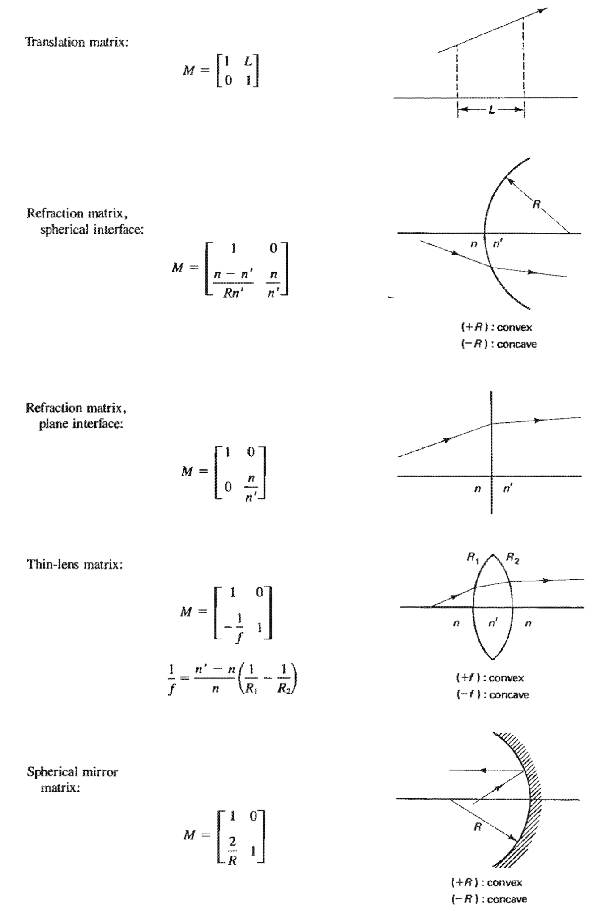
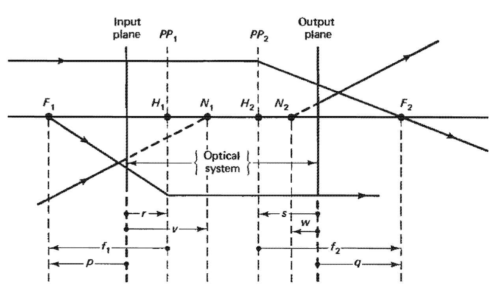

\[ n_i \sin\theta_i = n_t \sin\theta_t \]
\[ s' = s \frac{n_2}{n_1} \]
\[ \frac{n_1}{s} + \frac{n_2}{s'} = \frac{n_2 - n_1}{R} \]
\[ m = -\frac{n_1 s'}{n_2 s} \]
\[ \begin{align*} \frac{1}{f} &= \frac{n_2 - n_1}{n_1}\Big (\frac{1}{R_1} - \frac{1}{R_2}\Big) \\ &=\frac{1}{s} + \frac{1}{s'} \end{align*} \]
\[ \begin{align*} P&=\frac{1}{f} \\ &=\sum_{i=1}^n\frac{1}{f_i} \end{align*} \]


Circular opening with diameter \(D\), image radius \(d\), and focal length \(f\): \[ \begin{align*} E_e &\propto \frac{D^2}{d^2} \\ &\propto \frac{1}{A^2}, & A\equiv\frac{f}{D} \text{ relative opening} \end{align*} \]
Near point of normal eye is \(25\) cm.
Angular magnification at infinity: \[M=\frac{25}{f}\]
At near point: \[M=\frac{25}{f} + 1\]
Two lenses at a distance L from each other: \[\frac{1}{f} = \frac{1}{f_1} + \frac{1}{f_2} - \frac{L}{f_1 f_2}\]
If the system is independent of the refracting index:
\[L=\frac{1}{2}\big(f_1 + f_2\big)\]
Objective and eyepiece focal lenghts \(f_o\) and \(f_e\), with a distance \(d\) between the lenses.
\[ M=25\ \frac{f_e + f_o - d}{f_o\ f_e} \]
Exit and objective diameter \(D_{ex}\) and \(D_{obj}\) \[ \begin{align*} M&=-\frac{f_o}{f_e} \\ &=\frac{D_{obj}}{D_{ex}} \end{align*} \]
\(E = c B\)
\(u_E = \frac{1}{2} \epsilon E^2\)
\(u_B = \frac{1}{2} \frac{1}{\mu} B^2\)
\(u_E=E_B\)
\(u = u_E + u_B = \epsilon c E B\)
\(\vec{S} = \epsilon_0 c^2 \vec{E} \times \vec{B}\)
\(E_e = \langle \|\vec{S}\|\rangle = \frac{1}{2} \epsilon c^2 E_0 B_0\)
\[ \begin{align*} r_{TE}&=\frac{\cos\theta - n \cos\theta_t}{\cos\theta + n \cos\theta_t} &t_{TE} = 1 + r_{TE} \\ &=\frac{\cos\theta - \sqrt{n^2 - \sin^2\theta}}{\cos\theta + \sqrt{n^2 - \sin^2\theta}} \\ \\ r_{TM} &= \frac{\cos\theta_t - n \cos\theta}{\cos\theta_t + n \cos\theta} & n\ t_{TM} = 1 - r_{TM} \\ &= -\frac{n^2\cos\theta - \sqrt{n^2 - \sin^2\theta}}{n^2\cos\theta + \sqrt{n^2 - \sin^2\theta}} \end{align*} \]
\(r_{TM} = 0 \Rightarrow \theta = \theta_p=\arctan n\)
\(n = \frac{n_2}{n_1} > 1\)
\(\phi_{TE}=\pi\) \(\phi_{TM}=-\pi, \ \ \ \ \theta < \theta_p\) \(\phi_{TM}=0, \ \ \ \ \ \ \ \theta > \theta_p\)
\(\theta_c = \arcsin n\)
\(\theta > \theta_c:\)
\[ \begin{align*} \tan{\frac{\phi_{TE}}{2}} &= - \frac{\sqrt{\sin^2\theta - n^2}}{\cos\theta} \\ \tan{\frac{\phi_{TM}}{2}} &= - \frac{\sqrt{\sin^2\theta - n^2}}{n^2\cos\theta} \end{align*} \]
\(\theta \in (\theta'_p, \theta_c):\) \[ \phi_{TM}=\pi \] Otherwise: \[ \phi = 0 \]
\(R=\frac{P_r}{P_i}=r^2=\frac{E_r^2}{E^2}\) \(T=\frac{P_t}{P_i}=n \frac{\cos\theta_t}{\cos\theta} t^2\) \(T + R = 1\)
\(I = \epsilon_0 c \big\langle\vec{E}^2\big\rangle=\frac{1}{2}\epsilon_0 c E_0^2\)
\(\vec{E_i}=\vec{E_{0i}} \cos(k s_i - \omega t + \phi_i)\)
\(\vec{E_p} = \vec{E_1} + \vec{E_2}\)
\(I=I_1 + I_2 + 2 \sqrt{I_1 I_2} \langle\cos\delta\rangle, \ \ \ \ \delta=k(s_2 - s_2) + \phi_2 - \phi_1\)
Fringe contrast/visibility
\(\frac{I_{max} - I_{min}}{I_{max}+I_{min}}\)
Point source \(\Rightarrow\) same phase, propagation, etc.
\(I = 4 I_0 \cos^2\frac{\delta}{2}\)
Constructive:
\(\Delta s = s_2-s_1 = m \lambda \approx a \sin\theta\)
Destructive:
\(\Delta s = \big(\frac{1}{2} + m\big) \lambda \approx a \sin\theta\)
\(E_i = E_{0i} \cos(\alpha_i - \omega t)\)
\[ \begin{align*} E_r=\sum_i E_i & = E_0 \cos(\alpha - \omega t), \\ \tan\alpha &= \frac{\sum_i E_{0i} \sin\alpha_i}{\sum_i E_{0i} \cos\alpha_i}\\ E_0^2 &= \Big(\sum_i E_{0i} \sin\alpha_i\Big)^2 + \Big(\sum_i E_{0i} \cos\alpha_i\Big)^2 \\ &=\sum_i E_{0i}^2 + 2\sum_i \sum_{j > i} E_{0i} E_{0j} \cos(\alpha_i - \alpha_j) \end{align*} \]
\(N\) randomly phased sources of equal amplitude, \(N\) grows large: \[ E_0^2 = \sum_{i=1}^N E_{0i}^2 = N E_{01}^2 \]
\(N\) coherent sources: \[ E_0^2 = \sum_{i=1}^N E_{0i}^2 + 2\sum_{i=1}^N \sum_{j > i}^N E_{0i} E_{0j} \]
\(N\) coherent sourcces of equal amplitude: \[ E_0^2 = N^2E_{01}^2 \]
\(E_1=E_0 \sin(\omega t + kx)\)
\(E_2=E_0\sin(\omega t - kx - \phi_r)\)
\[ \begin{align*} E_R &= E_1 + E_2\\ &=2 E_0 \cos\Big(k x + \frac{\phi}{2}\Big) \sin\Big(\omega t - \frac{\phi_R}{2}\Big) \end{align*} \]
Beat frequency \(\omega_b=2\ \omega_g\)
\(E_i = E_0 \cos(k_i x - \omega_i t)\)
\[ \begin{align*} E_R &= E_1 + E_2\\ &=2 E_0 \cos(k_p x + \omega_p t) \cos(k_g x - \omega_g t) \end{align*} \] \[ \begin{align*} \omega_p &= \frac{\omega_1 + \omega_2}{2}, &k_p=\frac{k_1 + k_2}{2} \\ \omega_g &= \frac{\omega_1 - \omega_2}{2}, &k_g=\frac{k_1 - k_2}{2} \end{align*} \]
\[ \begin{align*} v_p &= \frac{c}{n} \\ v_g=\frac{dw}{dk}&=v_p\big(1 + \frac{\lambda}{n} \frac{dn}{d\lambda}\big)\\ &=v_p - \lambda \frac{dv_p}{d\lambda} \\ &=v_p\Big(1 - \frac{\omega}{n}\frac{dn}{d\omega}\Big) \end{align*} \]
Medium of normal dispersion \(\Rightarrow \frac{dn}{d\lambda} < 0\)
\(2\ d \cos\theta = m\ \lambda\)
Mirror translation \(\Delta d\) and \(\Delta m\) fringes passing a point:
\[\Delta m = \frac{2\Delta d}{\lambda}\]
Center dark spot:
\[m_{max}=\frac{2d}{\lambda}\]
Equal internal and external reflection:
\(\frac{n_f}{n_0}=\frac{n_s}{n_f} \Rightarrow n_f=\sqrt{n_0 n_s}\)
\[ \begin{align*} \vec{E} &= \vec{E}(x) e^{\beta z - \omega t} \\ \vec{B} &= \vec{B}(x) e^{\beta z - \omega t} \end{align*} \]
Satisfying maxwell's equations: \[ \begin{align*} \text{TE:} && \frac{\partial^2E_y}{\partial x^2}(x)&=\Big[\beta^2 - k^2(x)\Big] E_y(x) \\ \text{TM:} && \frac{\partial^2B_y}{\partial x^2}(x)&=\Big[\beta^2 - k^2(x)\Big] B_y(x) \\ \end{align*} \]
Implies relative refractive index \(N\) satisfying
\[ \begin{align*} \text{TE:} && \frac{\omega b}{c}\sqrt{n_1^2 - N^2}&=2 \arctan\sqrt{\frac{N^2 - n_2^2}{n_1^2 - N^2}} + m\pi \\ \text{TM:} && \frac{\omega b}{c}\sqrt{n_1^2 - N^2}&=2 \arctan\Big(\frac{n_1^2}{n_2^2}\sqrt{\frac{N^2 - n_2^2}{n_1^2 - N^2}}\Big) + m\pi \\\end{align*} \] for \(m\in\mathbb{N}\).
Light penetration of \(y\) into medium when \(\theta > \theta_c\): \[ E_t = E_{0t} \exp\Big(i x k_t \frac{\sin\theta}{n}\Big) \exp\Big(- i \omega t\Big)\exp\Big(- \alpha y\Big) \\ \\ \alpha \equiv k_t \sqrt{\frac{\sin^2\theta}{n^2} - 1} \]
\[l_c=\frac{2\pi c}{\Delta f}\] Coherent time and frequency bandwidth: \[ \begin{align*} \tau_c=\frac{l_c}{c}, & & \Delta f = \frac{1}{\tau_c} \end{align*} \] Uniform wavelength distribution around \(\lambda\) with linewidth \(\Delta\lambda\): \[l_c=\frac{\lambda^2}{\Delta\lambda}\]
Rectangular source of width \(s\) and angluar width \(\phi\): \[l_s=\frac{r \lambda}{s}\approx\frac{\lambda}{\phi}\] Circular source of diameter \(s\): \[l_s=1.22\frac{r\lambda}{s}\approx1.22\frac{\lambda}{\phi}\]
The intensity at a point \(P\) \[ I_P = I_{1P} + I_{2P} + 2 \sqrt{I_{1P} I_{2P}} \Re(\gamma(\tau)) \] with the normalized correlation function \[ \gamma(\tau) = \Big(1 - \frac{\tau}{\tau_0}\Big)e^{i\omega\tau} \]
With equal beams, we get \[ \begin{matrix} \text{Complete incoherence} & & \tau\to\tau_0 & V=0 \\ \text{Complete coherence} & & \tau = 0 & V=1 \\ \text{Partial coherence} & & 0 < \tau < \tau_0 & V=|\gamma(\tau)| \end{matrix} \]
Single rectangular slit, length much larger than width: \[ \begin{align*} dE_p&=\frac{E_L ds}{r} e^{i(kr-\omega t)} \approx \frac{E_L ds}{r_0} e^{i(kr_0-\omega t)}e^{ik\Delta r}, && \Delta r=s \sin\theta \\ E_p&=\frac{E_l b}{r_0} \text{sinc}\beta\ e^{i(k r_0 - \omega t)}, && \beta=\frac{1}{2} k b \sin\theta \\ I&=I_0\text{sinc}^2\beta, && I_0=\frac{1}{2}\epsilon_0 c \Big(\frac{E_l b}{r_0}\Big)^2 \end{align*} \]
Many slits:
\[I=I_0 \text{sinc}^2\beta\ \frac{\sin^2(N \alpha)}{\sin^2\alpha}\]
Rectangular slit:
\[I=I_0\text{sinc}^2\beta\ \text{sinc}^2\alpha\]
Circular slit \[ \begin{align*} I = I_0\Big(\frac{2 J_1(\gamma)}{\gamma}\Big)^2, && \gamma = \frac{1}{2} k\ D\sin\theta \\ && J_1(\gamma)=\sum_{l=0}^\infty \frac{(-1)^l}{2^{l+1}l!(l+1)!}\gamma^{2l + 1} \end{align*} \] Zeros of bessel functions and their derivatives
Width \(W\) of central maximum at a distance \(L\): \[W=L \Delta \theta = \frac{2L\lambda}{b}\]
(Sircular aperture) Rayleigh's criterion: \[(\Delta\theta)_{min}=\frac{1.22\lambda}{D}\]
Grating width \(a\)
Optical path difference: \[\Delta d = a (\sin\theta_i + \sin\theta_m)\]